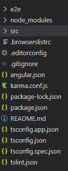
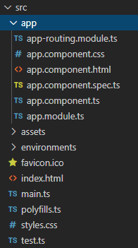
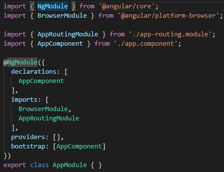
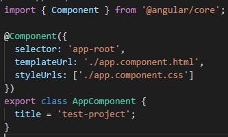

Angular學習筆記3 - 專案結構、Module、Component
Angular 的專案資料夾內容相當豐富，剛開始看到時，還真不知道該從哪裡下手呢。檔案數量多，名子又很長
所以一開始會先介紹一下基本的專案結構，然後間單說一下 Module 跟 Component
Angular 專案結構

- e2e
自動模擬使用者操作的測試。(我還沒用過這種測試，以前都是手動去測試的) - package.json / package-lock.json / node_modules
管理 nodejs 套件相關的檔案跟資料夾 - src
專案的原始碼 - angular.json
專案的設定 - tsconfig.app.json / tsconfig.json / tsconfig.spec.json
TypeScript 編譯的相關設定 - tslint.json
Type Script 程式碼檢查的設定
其他更詳細的部份可以參考官方文件
大多數的東西其實剛開始都不會碰，最主要的就是 src 資料夾
src 結構

src 資料夾裡面有幾個一開始需要先注意的東西：
- app 資料夾
應用程式的主體，裡面會放入與模組、元件、服務之類應用程式相關的程式 - assert 資料夾
網頁所需要的資源，編譯頁面時會被處理且一起被輸出 - style.css
整個專案共用的 CSS 樣式 - favicon.ico
網頁的圖標 - index.html
整個 SPA 的 HTML 本體
<app-root>元素裡會嵌入 AppComponent 處理後的頁面
其他不需要動，但很重要的東西：
- main.ts
專案的程式入口
會啟動 AppModule - test.ts
專案的測試程序啟動腳本
看完了專案結構之後，讓我們開始專注在 app 這個資料夾的內容上
整個資料夾目前共有6份檔案，分別為：
- app-routing.module.ts
路由模組 - app.component.css
AppComponent 的樣式表 - app.component.html
AppComponent 的 HTML 樣板檔 - app.component.spec.ts
AppComponent 的測試程式 - app.component.ts
AppComponent 類別 - app.module.ts
AppModule 類別
接下來將會簡單介紹一下上面所寫的 Module 跟 Component 是什麼東西
Module
檔案名稱為 <module_name>.module.ts
整個 Angular 程式都是跟著 Module 走
Module 會引入 Component 來渲染頁面
專案建立之後，會有一個最主要的模組叫做 AppModule，檔案名稱為 app.module.ts。
來看一下 AppModule 的樣貌：

整體結構看起來相當的簡單，裡面應用了幾個 Angular 的核心模組，並使用了裝飾器 NgModule
裝飾器
屬於設計模式的一種，可以為一個類別或函式附加額外的設定或功能
已經有一些程式語言提供了裝飾器的語法糖，例如說 Python 、Typescript、Javascript
來看一下裝飾器大概的樣貌，這邊是使用 python 來示範：
# 裝飾器 |
從輸出中可以看到，整個裝飾器運作的順序
在宣告時會先進入 decorator 裝飾 foo 這個函式，之後呼叫時則會呼叫已經被裝飾過函式
實際上 python 的 decorator 語法糖就等同於這個樣子：
def decorator(): |
decorator 可以有參數，也可以堆疊，像是：
|
decorator 的順序是由下到上
要特別注意的是，decorator 的順序是由下到上，而不是像視覺上看到的由上到下
這是因為套用兩層 decorator，會等同於下面這個樣子：
foo = decorator1(decorator2(value)(foo)) |
foo 先傳入 decorator2(value) 裡，接著 decorator2(value) 回傳的裝飾後的函式再傳入 decorator1
所以實際上是 decorator2(value) 會先被套用
TypeScript 上的 decorator 也類似 python，但是 TypeScript 只能對類別或是類別裡的方法使用 decorator，而且 TypeScript 的 decorator 只做修飾，不會回傳函式
NgModule
NgModule 是 Angular 的核心元件之一，是一種裝飾器
主要會使用這些參數：
- declarations
表示模組使用到的 Component，Component 本身要加到這邊才會有作用 - imports
表示該模組所引用的其他模組 - providers
額外的服務 (Service)，之後會提到 - bootstrap
主模組才會需要的東西，會在模組自啟時使用指定的 Component - exports
AppModule 沒有使用的參數，用於其他子模組
給其他模組使用的 Component
沒有寫在這邊的話，即使已經放入 declarations 中，模組被引用時依然不會使用那些 Component
BrowserModule
包含整個 Angular 應用所需的基礎架構
AppRoutingModule
路由模組，將路徑對到相對應的頁面。
詳細的內容在之後介紹路由時會說到
Component
檔案名稱為 <component_name>.component.ts
先看一下 app.component.ts 裡的樣貌：

上面的 @Component 部份跟 NgModule 一樣是裝飾器
主要參數有：
-
selector
元件在樣板中被使用時所對應的元素，使用 CSS Selector 選擇元素
基本上會是一個獨立名稱的標籤 (Tag)，通常為app-<tag_name>
AppComponent 中的 app-root 就是對應到前面 HTML 說到的<app-root> -
template / templateUrl
HTML 樣板
前者是直接把 HTML 打在裡面，後者則是直接引用檔案，檔案名稱通常為<component_name>.component.html -
styles / styleUrls
引用的樣式表
前者是直接把樣式打在裡面，後者則是直接引用檔案，檔案名稱通常為<component_name>.component.css(假設樣式表類型使用 CSS )
變數
在 Component 類別裡宣告的變數或函式，可以在樣板中被應用
例如說 AppComponent 裡的 title 數值為 'test-project'
如果還記得上一篇使用 ng serve 後瀏覽器上看到的畫面的話，會發現上面的字是 “test-project app is running!”
可以將 title 的數值改成其他內容，比如說 'hello-world'
之後再使用 ng serve 開啟伺服器後再去查看，你會發現它變成 “hello-world app is running!” 了
上一篇有說到，ng serve 開啟的伺服器會感應檔案的變化，然後讓瀏覽器重新整理
所以在改 title 之前可以先開啟伺服器，然後再修改 title，應該會發現頁面被自動重新整理
至於 HTML 樣板要怎麼引用這些變數，就等到下一個章節會繼續說明
結語
原本是想多放一點實際操作的，但是前面加上專案結構跟裝飾器介紹之後，發現這樣下去篇幅可能會太長，所以就先停在這裡，等後面再慢慢補上
Angular 的東西真的是蠻多的，自己目前碰到的也都是比較基本的東西而已，但是真要把這些基本的東西講明白，感覺也是挺困難的。目前都是依照自己的了解，加上網路上的一些資訊輔助，將文章打出來 (不然有些地方我其實也不知道應該要怎麼解釋會比較好)，希望有在看的各位到目前為止都還看得懂